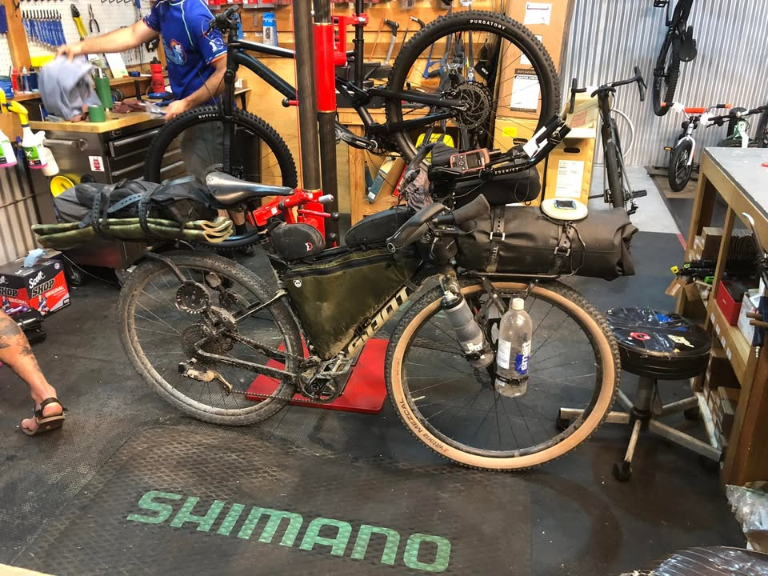
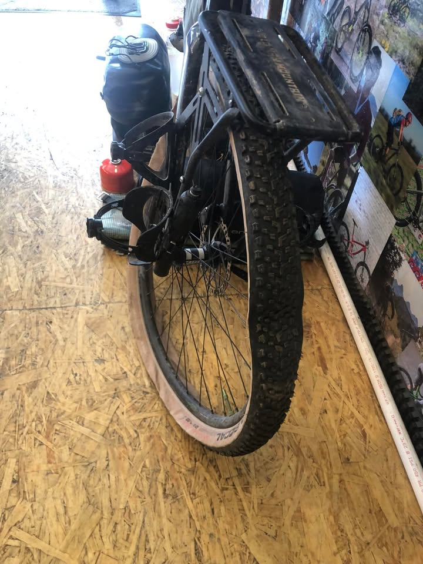
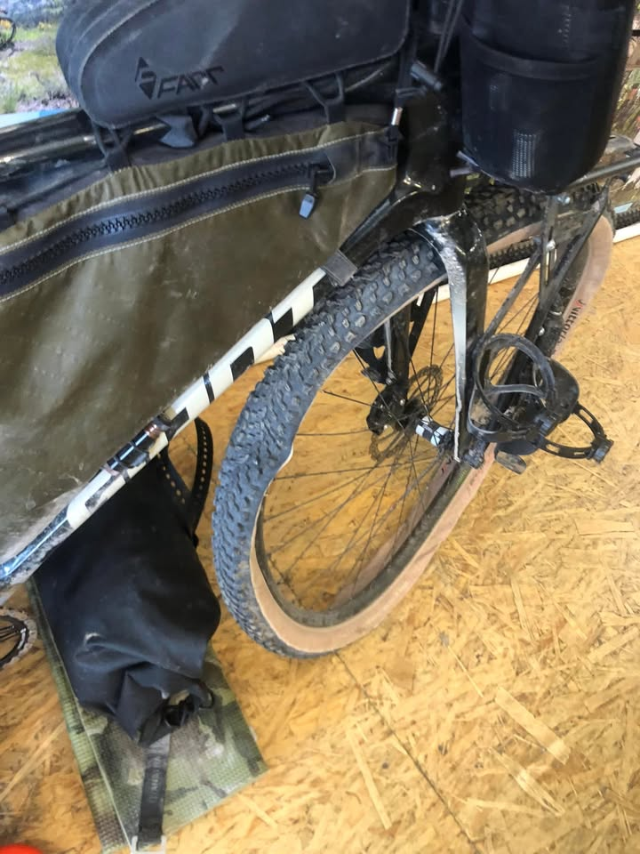
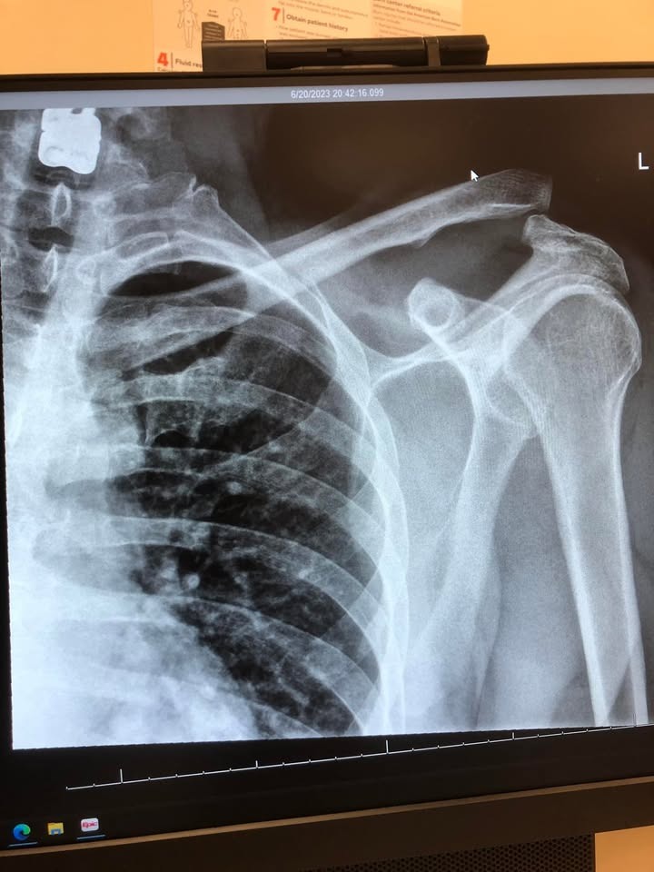
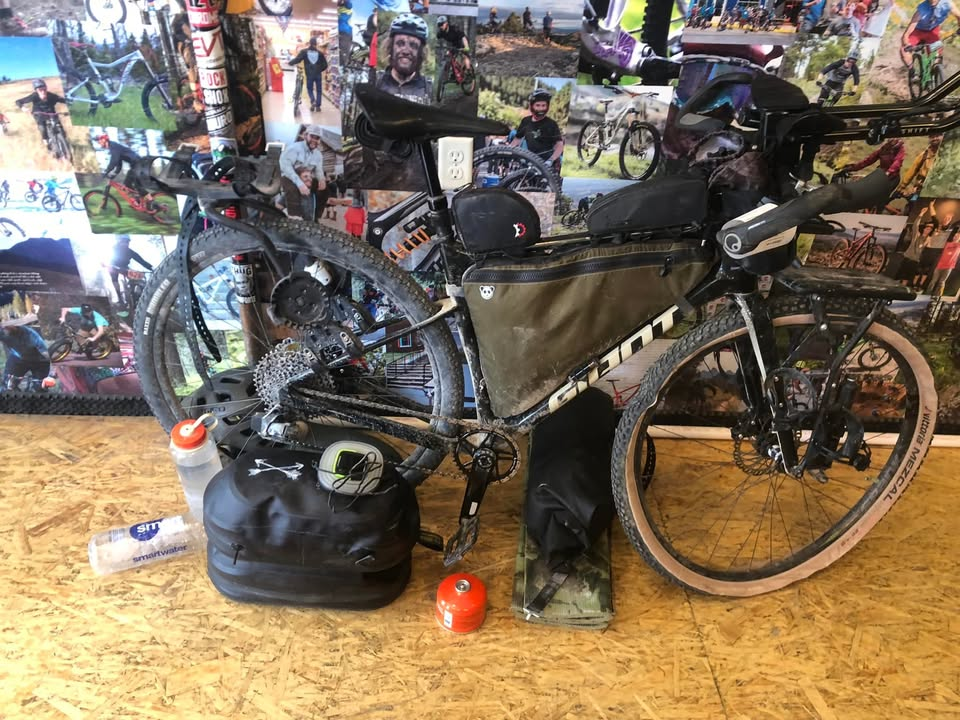

Day 12.. Rockstarr BBQ, New gears, hospital trip.. sadly my ride is over, for now
Woke up in high spirits, knowing that I’ll get my bike put together and back on the road. The Doubletree hotel where I’ve been staying the last two days has been wonderfully relaxing.
Stopping in at the bike shop in the morning I already had the expectation that USPS was not going to drop off my part until later in the afternoon. So I took some time to explore the downtown a little bit more.
Spent some time in a great little coffee shop. A friend of mine, clued me in on some great barbecue, and sent me the owners phone number. I gave him a call and come to find out. He opened at 3 o’clock down the street at the taphouse.

From the Journey
So when 3 o’clock came around I was able to grab a beer and some barbecue. If you’re ever in Helena Montana, and hankering for some barbecue, this is definitely the spot. Rockstarr BBQ had some of the best brisket I’ve ever tasted, So tasty I ended up with two plates. Chatting with the owner, he is opening up a brick and mortar shop of his own but for now they’re serving out of Taphouse kitchen.
I got back over to the bike shop where they had my bike up on the stand, putting the new brake line in. I had an issue with a seal and this will definitely help my brakes work a little better. When USPS dropped off my part. I told her she was my hero for today, but little did I know there would be quite a few more heroes saving me before I would lay my head to rest.
I got on the road and started peddling out with a small drizzle, just enough to hint at some rain, but not heavy enough to get everything wet. Three minutes down the road my bike computer starts taunting me about a 6 mile hill to tackle. Wow, that’s not exactly what I wanted to hear, but it would let me evaluate my new gear.
The new gear wasn’t perfect, but it was a huge improvement and I was able to get up this hill with a lot less trouble than before.

From the Journey
Similar to the front side of the hill the dirt roads on the back were in pretty good condition. I easily hit speeds of 24 to 31 miles an hour. Coming around the corner, getting to the bottom of the hill there was quite a few big potholes in the middle of the road where I was lined up. I Slowed down as much as I could, in these quick seconds, but it was not enough.
Everything happened very quickly. The first one or two potholes went as smoothly as possible. However, the third or fourth pothole my front tire warped and buckled under the stress. This sent me flying over the handlebars and landing on my left shoulder. I ended up with the bike somewhere on top of me and in quite a bit of pain.
The familiar hissing of my bike tire, letting air out, told me that this was not a Baby crash. I would have to at least get back into town to get my tire fixed. The pain setting in told me I had bigger problems.
With every breath labored, I eventually kick my bicycle off the top of me. Pain screaming, I’m still alive. Doing an assessment of what I might hurt, I think that I must’ve dislocated my shoulder and possibly broken some ribs. The pain is unfamiliar, I haven’t experienced either of those before.

From the Journey
After about five minutes I gained my wits again and reached for my phone. Turning the airplane mode off the roulette wheel of searching for a signal begin. No signal. I noticed a house about a quarter-mile away. Grabbed my tracker just in case I needed to send an SOS. But looking around there was another road that has some mailboxes that were a little bit closer and seemed promising.
I stumbled my way in that direction. I got maybe 100 yards of the road and realize that the houses on this road were much further than expected. I decided to turn around and head to the house that I could see.
On the left side their was a coral with a horse. He could sence that some thing was wrong. He trotted up to the fence to get a better look. I got this feeling that he wanted Help, but couldn’t. I could see the look in his eyes.. he knew I was in a lot of pain.
Luckily, I only got about another 20 feet before I heard a truck rumbling down the road.

From the Journey
I waved down the driver, who was a cowgirl heading into town. Lindsay, I think her name was. I told her I needed some help. We got my bike in the back of the truck. I tried to help the best I could, but I shouldn’t have been helping at all.
She got me back up the hill I worked so hard to get up earlier, and got me to the emergency room. There I got x-rays and they told me I separated my shoulder. It’s a little different, then it popping out of the socket. I think a whole lot worse.
The next morning, I got my bike to where it needed to be thanks to a nurse who volunteered to help. I’ve got my good friend Andrew flying out here this evening to help me get on a plane and help me get my flights sorted. Thanks to my mom and dad, Friday I’ve already got an appointment with an orthopedic doctor. My mom will also stay at my place and help me once I get home.

From the Journey
The Small-town nature of this capital city really came together to help me out. The hospital set me up at a hotel for the night, got me some meds for the pain and one of the nurses volunteered to help me out the next day getting my bike and myself to where I needed. The Uber driver Brian gave me his card and didn’t charge me a Cent. The Hilton Double Tree front desk allowed me to check in hours early, remembered me, and was sad to see me return due to the circumstances.
I’m disappointed that my trip ended early. But I am happy that so many people came together to help me out in my time of need. It warms my heart. Thank you to all of them.
If you’ve been following my journey, I am sad to say that this is the end of this particular trip. But I will be back, and I still plan to conquer this trail in the future. Thank you..